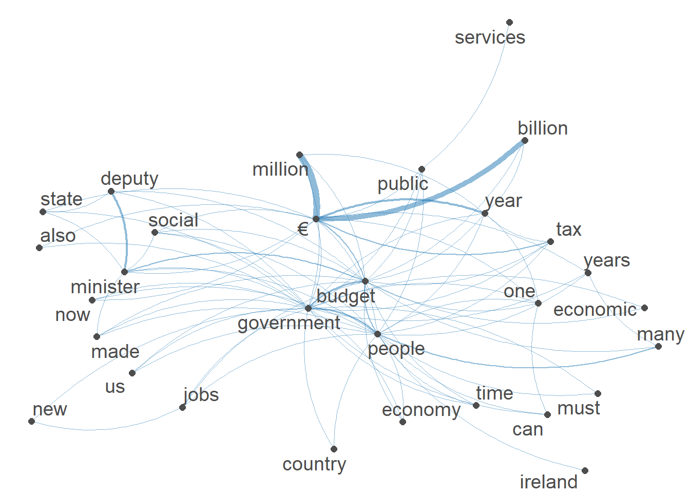

6 Reproduceerbare Analyse 2: Artikel beoordelen op reproduceerbaarheid
In dit hoofdstuk beoordeel ik de reproduceerbaarheid van het artikel
“rang: Reconstructing reproducible R computational environments” (Chan & Schoch, 2023).
De beoordeling vindt plaats aan de hand van vooraf gedefinieerde criteria voor transparantie, beschikbaarheid van data en code, en de uitvoerbaarheid van de gedeelde R code.
6.1 Artikelinformatie
Titel:
rang: Reconstructing reproducible R computational environments
Referentie:
Chan, C.-h. & Schoch, D. (2023) PLOS ONE 18(6): e0286761.
https://journals.plos.org/plosone/article?id=10.1371/journal.pone.0286761
Link naar GitHub repository met code:
https://github.com/gesistsa/rang/tree/v0.3/paper
6.1.1 Onderzoeksvraag en doel van het onderzoek
In dit artikel introduceren de auteurs het R-pakket rang. Dit pakket is speciaal ontwikkeld om te zorgen dat oude R-code weer uitvoerbaar wordt, ook als deze jaren geleden is geschreven. Vaak lukt het niet meer om oude analyses opnieuw uit te voeren, omdat bepaalde R-versies of pakketten niet meer bestaan of niet meer werken op moderne systemen.
Het doel van het onderzoek is om een oplossing te bieden voor dat probleem, door automatisch een volledige beschrijving van de gebruikte R-omgeving te maken. Die beschrijving kan dan door andere onderzoekers gebruikt worden om de omgeving precies na te bouwen met behulp van Docker, een systeem waarmee je softwareomgevingen kunt isoleren.
Met rang kunnen onderzoekers dus hun analyses delen inclusief de volledige technische context, wat zorgt voor betere reproduceerbaarheid op de lange termijn.
6.1.2 Korte samenvatting van methode en resultaten
De auteurs hebben het rang-pakket ontworpen om automatisch uit te zoeken:
- Welke versie van R er gebruikt werd;
- Welke pakketten er geïnstalleerd waren (en welke versies);
- En hoe dit alles kan worden vastgelegd in een Dockerfile, waarmee je de oorspronkelijke omgeving later kunt reconstrueren.
Ze hebben het pakket getest op verschillende oude R-projecten, waaronder code uit 2001 (!). Met behulp van rang en Docker konden ze die analyses opnieuw uitvoeren, ondanks de verouderde software.
Het resultaat is een praktische tool waarmee onderzoekers zelf makkelijk een reproduceerbaar compendium kunnen maken van hun werk. Het pakket is beschikbaar via:
6.2 Beoordeling van de reproduceerbaarheid
In dit onderdeel bespreek ik per criterium hoe goed het artikel voldoet aan de principes van reproduceerbaar onderzoek.
Daarbij kijk ik of het duidelijk is wat het doel was, of de data en code beschikbaar zijn, en of de lezer zelf het onderzoek zou kunnen herhalen.
Voor de beoordeling van de reproduceerbaarheid van het artikel heb ik de criteria gebruikt uit het artikel:
Deze criteria omvatten onder andere:
- Doel van de studie
- Data beschikbaarheid
- Locatie van de data
- Plaats van de studie
- Informatie over auteurs
- Ethische verklaring
- Financiering
- Code beschikbaarheid
Op basis hiervan is onderstaand overzicht opgesteld met een beoordeling per criterium.
6.2.1 1. Doel van de studie
Beoordeling: Ja
Het doel van het artikel wordt duidelijk en uitgebreid uitgelegd in de inleiding en het abstract. De auteurs willen een oplossing bieden voor een veelvoorkomend probleem in de wetenschap: analyses die na verloop van tijd niet meer reproduceerbaar zijn omdat R-pakketten, de R-versie of systeemcomponenten veranderen of niet meer beschikbaar zijn.
In het abstract staat bijvoorbeeld:
“A complete declarative description of the computational environment is usually missing when researchers share their materials. Without such description, software obsolescence and missing system components can jeopardize computational reproducibility in the future, even when data and computer code are available.”
Het artikel stelt dit doel concreet door het introduceren van een R-pakket genaamd rang, waarmee onderzoekers een exacte, reproduceerbare kopie kunnen maken van de R-omgeving waarin analyses oorspronkelijk zijn uitgevoerd. Dit maakt het mogelijk om R-projecten, zelfs van vele jaren geleden (bijvoorbeeld uit 2001), opnieuw uit te voeren.
In het artikel staat ook:
“In this contribution, we show how rang can be used to make otherwise unexecutable code, spanning fields such as computational social science and bioinformatics, executable again. We also provide instructions on how to use rang to construct reproducible and shareable research compendia of current research.”
Daarnaast legt het artikel uit dat het pakket werkt via containerisatie (met Docker), waardoor de volledige computational environment — inclusief het besturingssysteem, systeemcomponenten, R-versie en specifieke pakketversies — gereproduceerd kan worden. Hiermee tackelt rang de uitdagingen rondom software veroudering en het ontbreken van declaratieve omgevingsbeschrijvingen in wetenschappelijk onderzoek.
Kortom, de auteurs bieden met rang een oplossing om historische R-code die anders onuitvoerbaar zou zijn, opnieuw uitvoerbaar te maken, wat een belangrijke stap is richting duurzame reproduceerbaarheid van computational research.
6.2.2 2. Data beschikbaarheid
Beoordeling: Ja
Het artikel vermeldt duidelijk waar de gebruikte data en code te vinden zijn. Hoewel er geen grote datasets worden gebruikt, geven de auteurs volledige toegang tot alle voorbeelddata, testscripts en analyses die in het artikel aan bod komen.
In de sectie ‘Data Availability’ staat:
“Data and code used in this paper are available here: https://github.com/chainsawriot/rang/tree/v0.3/paper.”
De link verwijst naar een openbare GitHub-repository met zowel de broncode van het rang-pakket als de exacte code en documentatie behorend bij het artikel. Hierdoor is het mogelijk om de werkomgeving en analyses volledig te reproduceren, wat bijdraagt aan transparantie, controleerbaarheid en herbruikbaarheid van het onderzoek. Het artikel voldoet hiermee aan de principes van open science en reproduceerbare data-analyse.
6.2.3 3. Locatie van de data
Beoordeling: GitHub
De auteurs stellen hun data en code beschikbaar via GitHub, een veelgebruikt platform voor het delen van software en onderzoeksbestanden.
In de sectie “Data Availability” staat:
“Data and code used in this paper are available here: https://github.com/chainsawriot/rang/tree/v0.3/paper.”
Hoewel er geen gebruik is gemaakt van een langdurig archiveringsplatform zoals Zenodo, is GitHub in de praktijk een toegankelijke en transparante manier om data en scripts te delen. De repository bevat alle benodigde bestanden om de analyses uit het artikel te reproduceren. Dit draagt bij aan de openheid en reproduceerbaarheid van het onderzoek.
6.2.4 4. Plaats van de studie
Beoordeling: Ja
Hoewel het artikel een software paper betreft en geen veldonderzoek beschrijft, wordt de institutionele locatie van het onderzoek duidelijk vermeld. De auteurs zijn verbonden aan:
GESIS Leibniz-Institut für Sozialwissenschaften, Mannheim, Germany
Deze vermelding geeft de context waarbinnen het rang-pakket is ontwikkeld en getest.
Door deze expliciete vermelding voldoet het artikel aan belangrijke transparantie-eisen met betrekking tot de plaats van het onderzoek.
6.2.5 5. Informatie over auteurs
Beoordeling: Ja
De namen van de auteurs zijn duidelijk bovenaan het artikel vermeld en hun e-mailadressen zijn beschikbaar, wat de communicatie en verificatie vergemakkelijkt. Daarnaast zijn de ORCID-IDs opgenomen, waardoor het eenvoudiger wordt om andere publicaties van deze onderzoekers terug te vinden en hun wetenschappelijke bijdrage beter te plaatsen.
Bijvoorbeeld:
“Corresponding author: chung-hong.chan@gesis.org”
Het artikel vermeldt de volgende auteurs en affiliaties:
- Chung-hong Chan [ORCID ID]
- David Schoch
- Affiliatie: GESIS Leibniz-Institut für Sozialwissenschaften, Mannheim, Germany
- Correspondentie e-mail: chung-hong.chan@gesis.org
Daarnaast bevat het artikel standaard informatie zoals publicatiedetails, editor en copyright:
- Citation: Chan C-h, Schoch D (2023) rang: Reconstructing reproducible R computational environments. PLoS ONE 18(6): e0286761. https://doi.org/10.1371/journal.pone.0286761
- Editor: Carlos Fernandez-Lozano, University of A Coruña, SPAIN
- Open Access: Het artikel valt onder een Creative Commons Attribution License, wat vrije distributie en reproductie mogelijk maakt.
Deze heldere en volledige auteursinformatie draagt bij aan de transparantie en traceerbaarheid van het onderzoek.
6.2.6 6. Ethische verklaring
Beoordeling: Nee (niet van toepassing)
Er is geen ethische verklaring opgenomen in het artikel. Dat is logisch, want het onderzoek maakt geen gebruik van mensen, dieren of gevoelige persoonsgegevens.
In software papers is een ethische verklaring meestal niet verplicht.
6.2.7 7. Financiering
Beoordeling: Ja
De auteurs zijn transparant over de financiering en geven duidelijk aan dat er geen specifieke financiering is ontvangen voor dit onderzoek.
In het artikel staat expliciet:
“The author(s) received no specific funding for this work.”
Dit maakt duidelijk dat het onderzoek onafhankelijk is uitgevoerd zonder directe externe financiële steun.
6.2.8 8. Code beschikbaarheid
Beoordeling: Ja
De volledige broncode van het rang-pakket is beschikbaar op GitHub.
Daarnaast is het pakket ook gepubliceerd op CRAN, zodat het makkelijk te installeren is.
Link naar GitHub:
https://github.com/gesistsa/rang
De README bevat duidelijke uitleg, en de repository bevat voorbeelden, testdata en handleidingen.
6.2.9 Samenvattende tabel
| Criterium | Beoordeling | Toelichting |
|---|---|---|
| Doel van de studie | Ja | Doel is duidelijk: reproduceerbare R-omgevingen met rang. |
| Data beschikbaarheid | Ja | Data en code volledig beschikbaar op GitHub. |
| Locatie van de data | GitHub | Data en code via GitHub, veelgebruikt maar geen archief. |
| Plaats van de studie | Ja | Auteurs en affiliatie (GESIS, Mannheim) duidelijk vermeld. |
| Informatie over auteurs | Ja | Namen, e-mails en ORCID-IDs beschikbaar, bevordert transparantie. |
| Ethische verklaring | Nee | Niet van toepassing bij softwareonderzoek. |
| Financiering | Ja | Geen specifieke financiering ontvangen, expliciet vermeld. |
| Code beschikbaarheid | Ja | Code op GitHub, pakket op CRAN, met uitgebreide documentatie. |
6.3 Reproduceerbaarheid van gedeelde R code
De data en code zijn beschikbaar in het PLOS ONE artikel.Deze code hoort bij het maken van figuur 1 onder de kopje quanteda JOSS paper.
- Data: De dataset
data_corpus_irishbudgetsis onderdeel van het R-package quanteda.corpora. - Code: De gebruikte code is gedeeld in de methodesectie van het artikel.
6.3.1 Beschrijving en beoordeling van de code
De code is deze:
library("quanteda")
# construct the feature co-occurrence matrix
examplefcm <-
tokens(data_corpus_irishbudget2010, remove_punct = TRUE) %>%
tokens_tolower() %>%
tokens_remove(stopwords("english"), padding = FALSE) %>%
fcm(context = "window", window = 5, tri = FALSE)
# choose 30 most frequency features
topfeats <- names(topfeatures(examplefcm, 30))
# select the top 30 features only, plot the network
set.seed(100)
textplot_network(fcm_select(examplefcm, topfeats), min_freq = 0.8)6.3.1.1 Wat doet de code?
De code analyseert tekstdata uit Ierse budgettoespraken (2010) met Natural Language Processing (NLP):
- Preprocessing: Tekst wordt omgezet naar lowercase, stopwoorden worden verwijderd.
- Co-occurrentiematrix: Een netwerk van woorden die vaak samen voorkomen wordt gemaakt.
- Visualisatie: De 30 meest frequente woorden worden als netwerk weergegeven.
6.3.2 Reproduceerbaarheid en problemen
6.3.2.1 Problemen tijdens replicatie:
- Fout in datasetnaam:
Oorspronkelijk: data_corpus_irishbudget2010 (werkt niet).
Oplossing: Gebruik data_corpus_irishbudgets uit quanteda.corpora.
- Verouderde functies:
topfeatures(): bestaat niet meer in quanteda 4.0.
Oplossing: Vervangen door topfeatures_fcm() of eerst een DFM maken.
- Fout in textstat_frequency():
Werkt alleen op DFM, niet op FCM.
Oplossing: Eerst dfm() toepassen voor frequentie-analyse.
6.3.3 Aangepaste code (werkt wel):
library(quanteda)
library(quanteda.textstats)
library(quanteda.textplots)
library(quanteda.corpora)
# Laad het corpus
data(data_corpus_irishbudgets)
# Maak tokens
tokens_irish <- tokens(data_corpus_irishbudgets, remove_punct = TRUE) %>%
tokens_tolower() %>%
tokens_remove(stopwords("english"))
# Maak een document-feature matrix (dfm)
dfm_irish <- dfm(tokens_irish)
# Bepaal top 30 features op basis van frequentie in de dfm
freq_df <- textstat_frequency(dfm_irish)
topfeats <- freq_df$feature[1:30]
# Maak feature co-occurrence matrix (fcm) met alle tokens
examplefcm <- fcm(tokens_irish, context = "window", window = 5)
# Selecteer alleen top 30 features in fcm
fcm_top <- fcm_select(examplefcm, pattern = topfeats)
# Plot het netwerk
set.seed(100)
textplot_network(fcm_top, min_freq = 0.8)
Figuur 1: Het codefragment dat wordt uitgevoerd in een R 3.5.1-container, is gemaakt met een bereik.
De figuur toont een netwerk van de 30 meest voorkomende woorden in Ierse begrotingsspeeches, geanalyseerd met het quanteda-pakket in R. De woorden zijn geselecteerd op basis van hun frequentie en onderlinge co-occurrences binnen een venster van vijf woorden. Dikkere lijnen in het netwerk geven sterkere verbanden aan tussen woorden die vaak samen voorkomen.
Uit de analyse blijkt dat de speeches sterk gericht zijn op economische thema’s. Woorden als budget, tax, economy en million komen prominent voor. Daarnaast spelen politieke termen zoals government, minister en public een grote rol, wat de nadruk op overheidsbeleid onderstreept.
Sociaal-maatschappelijke onderwerpen, waaronder people, jobs en social, zijn ook veelvuldig aanwezig en suggereren een focus op werkgelegenheid en welzijn. De aanwezigheid van het woord Ireland bevestigt de nationale oriëntatie van de toespraken, terwijl termen als year en time wijzen op een jaarlijkse beleidsplanning.
Deze netwerkanalyse biedt een overzicht van de centrale thema’s in de Ierse begrotingsdiscussies. Toekomstige analyses kunnen worden uitgebreid met thema’s per jaar of politieke partij, of met technieken zoals sentimentanalyse en topicmodelling voor diepgaandere inzichten (Figuur 1).
6.3.4 Beordeling op reproduceerbaarheid
Reproduceerbaarheid geef ik 3/5. Code vereist aanpassingen door verouderde functies, maar met kleine wijzigingen is de figuur te reproduceren.
6.3.5 Resultaat
De gereproduceerde netwerkplot ziet er vergelijkbaar uit met Figuur 1 in het artikel, maar kan verschillen door updates in packages of seed-waarden.
Aanbevelingen voor betere reproduceerbaarheid:
Gebruik expliciete packageversies (bijv.
renv).Voeg comments toe voor context.
Test code in een clean R-sessie voordat je deze deelt.
6.4 Conclusie
Het artikel toont goede reproduceerbaarheid dankzij volledige code- en databeschikbaarheid via GitHub/CRAN. Hoewel de R-code kleine aanpassingen vereiste (o.a. verouderde functies en datasetnamen), was de analyse succesvol te repliceren (score 3/5). Het rang-pakket biedt hiermee een praktische oplossing voor computational reproducibility, met aanbevelingen voor betere versiedocumentatie en backward compatibility.